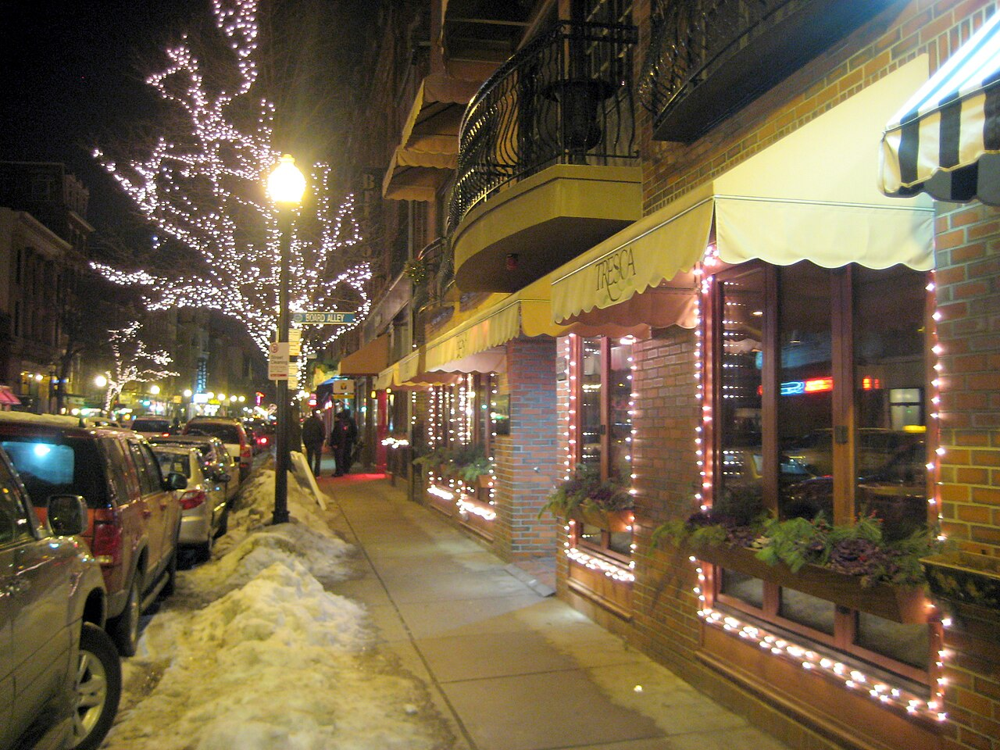
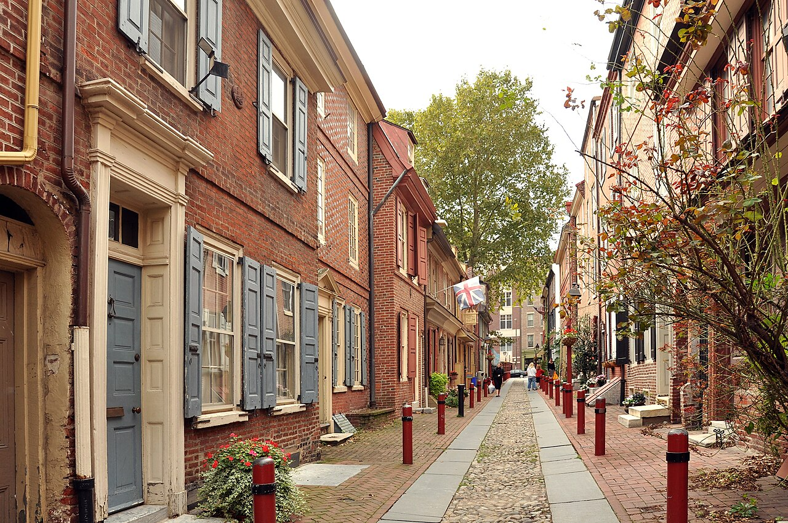

PRIVATE DEPARTURE1 / 1 席已成團
2026.09.19 — 10.05
不是城市集點。
是五種美國。
17 天、5 座城市、1 場海岸婚禮。從 Brooklyn 的黃昏走進 Boston 的革命史，再一路南下到美國如何誕生、如何被記住的地方。
計算距離出發日…
CHOOSE A CHAPTER首頁負責心動；
首頁負責心動；
細節交給每座城市。
每一頁都已拆成早／午／晚的操作節奏，附上三張以上的場景照、順走動線、吃什麼、雨天替代與真正需要預約的項目。








9/30—10/4 · INSTITUTIONS AFTER DARK
白天看制度，入夜看記憶。
Capitol、Smithsonian 與 Monument Walk 各有自己的時間。
翻開 Washington, DC 篇 →THREE PROMISES
這趟不會被行程表吃掉。
每天都有主線，但沒有假裝所有事情都能同時發生。你只需要記住三條規則。